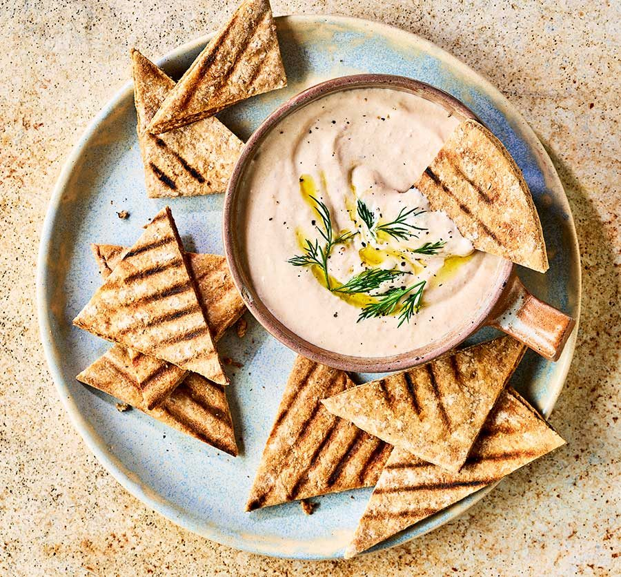

Taramosalata

Description
Taramasalata (sometimes spelt taramosalata) is a delicious fish roe based dip made of salted and cured roe of cod
or
carp and sometimes, even grey mullet or bottarga. It is a velvety smooth dip that is mixed with olive oil and
lemon
juice and added to a starch base, which can be either bread of potatoes.
Taramasalata is commonly served during Shrove Monday, also known as “Clean” Monday, which is the first day of the
Greek
Easter lent. It is called “Clean Monday” because its the day where Greek Orthodox people cleansed their body and
spirit
and prepared themselves for the 40 days of Easter lent.
The store-bought taramasalata simply can’t compare with this homemade taramasalata recipe. Mass-produced
taramasalata
is, more often than not, of poor quality and has a very bright pink hue due to the addition of food colouring
along with
lots of unnecessary thickeners and preservatives.
Fresh taramasalata is really easy to make at home, as the tarama and bread mixture is emulsified with olive oil,
giving
it a natural thickness, smoothness and exquisite taste. Depending on the type of roe used, its colour can vary
from
light beige to pale pink.
Recipe
- 100g White fish roe
- 300g White bread soaked in water and squeezed (10 oz.)
- 170–180 ml Olive oil
- 2 Lemons
- 1 Red onion
Steps
- To prepare this delicious taramasalata recipe, start by soaking the bread (crust removed) in water and
squeeze well to
remove the excess water.
- In a food processor add the bread, grated onion and the tarama. Blend until the ingredients are mashed (like
a pulp).
Add half lemon juice and blend a little more. Pour in the olive oil gradually (just a little bit at a time)
whilst
blending, like making mayonnaise. Blend until the oil is incorporated and the mixture is smooth and creamy.
Taste the
taramasalata add some more lemon juice, according to preference and blend again.
- Serve this traditional Greek taramasalata dip with lots of pita bread.
Ingredients for bread
- 500–530g (17-18.5 oz.) strong white bread flour or 50% white and 50% whole-wheat flour
- 360g (12.7 oz.) lukewarm (40C/ 104F)
- 3 tsp dry instant yeast
- 1 tsp salt
- 1 tsp sugar
Making the bread:
- To prepare this pitta bread recipe add in a mixer’s bowl the yeast, sugar and water and blend to
dissolve the yeast. Set
aside for 5-10 minutes until yeast froths.
- Add the flour and salt and mix using the dough hook for 6-8 minutes. Alternatively you could mix the
ingredients by
hand.
- Depending on the flour used, the dough may need a little bit less or more flour than this pita bread
recipe calls for.
After mixing for a while the dough for your pita bread should become an elastic ball and a bit
sticky.
- When ready, coat the dough with olive oil, place in a bowl and cover with plastic wrap and a kitchen
towel. Let it sit
in a warm place, for at least 20 minutes or until it doubles its size. This is an important step for
this pita bread
recipe. The first proof makes the pita bread fluffy and soft. If it is winter, turn the oven on for
a minute or two,
until it’s a little warm, switch it off and then let the dough rise in it.
- Take the dough out of the bowl and gently deflate with your hands. Use just a tiny bit of flour to
help you if it is too
sticky. Split into 6 evenly sized balls around145g/ 5 oz. each.
- Let the pita bread balls rest for 15 minutes before shaping. This is the second proof and will allow
your dough to relax
and become easier to shape.
- To form the pita bread, you can either use a rolling pin, or stretch it with your hands, about 20cm
in diameter. A
rolling pin will make a crunchier pita, while hand stretching a softer, fluffier one. If the dough
springs back, set it
aside for a few minutes to rest and then continue rolling again.
- For a more traditional look on your pita bread, press the dough firmly with your fingertips forming
dimples or use a
fork to make some holes on top.
- For a faster baked pita, heat a non-sticking frying pan to medium heat and add just a little bit of
olive oil and wipe
off any excess. Bake each pita bread for about 3 minutes on each side, until slightly coloured and
still soft. If your
pan has a lid, place the lid on while baking them to keep the moisture in.
- For a fluffier pita use the steam method. Cut a piece of aluminium foil to the size of your pan.
Generously sprinkle and
spread some olive oil on it. Shape and place your pita on the foil. Pour a large glug of water in
your plan over medium
low heat – it should start steaming immediately! Place your pita immediately in it and cover with
the lid. Let it steam
for 12-15 minutes. Take it out, flip it over and cook for another 2-3 minutes on the foil.
- To give it more colour, when you flip your pita bread, push it lightly with a wooden spoon on the
pan.